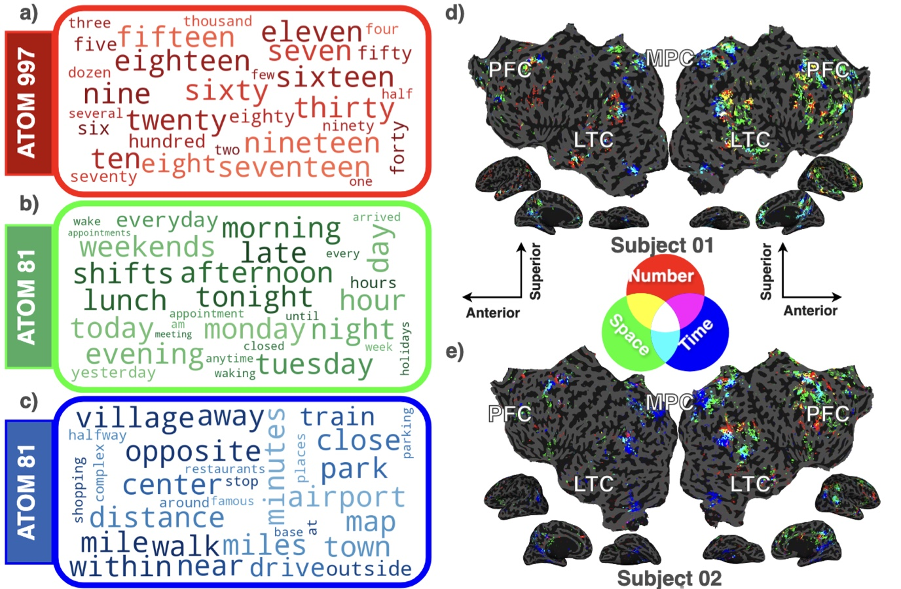

A Distributed Cortical Network Integrates Semantic Representations of Number, Space, and Time

This pattern is consistent with the hypothesis that these domains rely on a shared magnitude system in the human brain.
A short tour written for this page. The analysis and figures are the time–space–number case study of the NeurIPS paper; the CCN 2026 poster (C46, presented by Evi Hendrikx) builds on it, extending the analysis to 19 participants and asking how far a voxel’s tuning is selective for one quantity or shared across all three; its abstract is below, and the extended abstract is on OpenReview. The figures and numbers on this page are from the earlier seven-listener analysis.
The short version
A theory from 2003 holds that the brain measures how many, how far and how long with one shared system. Behaviour supports it; imaging studies have disagreed with one another. We tested it differently: people listened to stories, and we mapped where cortex responds to words about number, space and time, each on its own axis, so that the three maps can be laid over one another. They overlap, in the same two regions, in both hemispheres, across listeners.
- 3domains, one axis each: number, time, space
- 7listeners, about two hours of stories apiece
- 0.18three-way overlap of the top-5,000-voxel maps (intersection over union)
- IPS + IFGwhere all three meet, bilaterally
The theory of magnitude
Kant counted space, time and number among the mind’s a priori intuitions. Cognitive neuroscience has a more concrete version. Vincent Walsh’s A Theory of Magnitude (2003) proposes that time, space and quantity are not three systems but one: a common metric in parietal cortex, there because acting on the world needs all three at once. How far is it, how long will it take, how many are there. Stanislas Dehaene’s The Number Sense (1997) had already put approximate number in the intraparietal sulcus; Dehaene and Brannon (2010) called the trio “a Kantian research program”.
The behavioural evidence is strong: judgements of one magnitude bleed into judgements of another, as one would expect if they shared a scale. The imaging evidence is less settled: results have been inconsistent from study to study (Cona et al., 2024; Simsek et al., 2025). Part of the difficulty is method.
Why it is hard to test
The usual test runs three small experiments, one per magnitude, and asks whether the activated regions coincide. Each experiment brings its own task, its own stimuli and its own confounds, so “overlap” is partly a statement about how the experiments were built.
Stories are the opposite. Someone telling a true story on stage counts things, places things and times things continually, in the same breath and in the same currency: words. An fMRI encoding model fit to story listening (see the method page) gives every voxel a weight for every feature of the words it hears. If there were a feature for number, one for time and one for space, the three maps would come from one experiment, one stimulus stream and one model, and could be compared directly.
The difficulty is in the features. Those that predict brain activity best are word embeddings, and in an embedding number, time and space are not separate dimensions. They are correlated directions compressed into a shared space. A voxel tuned to number will appear tuned to time as well, purely because of the geometry of the embedding, and any overlap then found on cortex could be an artefact of the features rather than a fact about the brain.

A test from stories
The fix is the Sparse Concept Encoding Model: unpack the 300-dimensional embedding into 1,000 sparse, non-negative concept atoms, each a single interpretable direction, and fit the encoding model on those instead. Prediction is unchanged, and now the weights can be read atom by atom. Three of the atoms are exactly the three the theory calls for:
- Atom 505, number: eleven, sixteen, nineteen, fifteen, seventeen, twenty, ten, eighteen, thirty, sixty.
- Atom 81, time: morning, afternoon, evening, weekends, monday, tuesday, lunch, night, hour, day.
- Atom 997, space: near, close, distance, airport, center, miles, opposite, minutes, village, mile.
For each atom we take the 5,000 voxels with the largest significant positive weights — the same count for each, so that no domain prevails by extent — colour them red, green and blue, and look for white.
The dense model cannot do this in a principled way, but it can do it approximately: call a voxel selective for a concept if that concept is among its top ten cosine matches. The same three-colour test run on those heuristic maps is the control.
{kind=link}

What we found
The three maps meet in IPS and IFG
With concept atoms, the white is clear and it lies where the theory placed it: in the intraparietal sulcus, where Dehaene located the number sense, and in the inferior frontal gyrus, in both hemispheres, in both subjects shown at the top of this page. The maps differ somewhat from person to person, as within-subject maps from naturalistic data do, but the meeting points do not move.
Averaged over all seven listeners, the intersection-over-union of the top-5,000 maps is 0.34 ± 0.05 for time–space, 0.32 ± 0.07 for time–number, 0.32 ± 0.07 for space–number, and 0.18 ± 0.05 for all three together. Every pairing overlaps to about the same degree; no domain stands apart.
Not an accident of the three atoms chosen
Atoms 505, 81 and 997 are one exemplar per domain, but the dictionary has others in each domain: number atoms 394 and 505, time atoms 81, 798 and 880, space atoms 353 and 997. Cortical maps of atoms in the same domain agree with each other (cosine 0.50 ± 0.06 for the number pair, 0.50 ± 0.09 for the space pair, 0.43–0.46 among the time atoms) far more than maps of atoms from different domains, which average 0.05 ± 0.01. The domains are coherent units on cortex, not one fortunate atom apiece.
Number sits beside time in the larger geometry
Widen the view to the twenty most active atoms and cluster them by the similarity of their cortical maps. The two time atoms and the number atom fall into one branch, beside one another. That grouping is not inherited from the features: the sparse features themselves are uncorrelated, so the structure comes from cortex.

The maps in the browser
Everything above is the seven-listener analysis from the thesis. The CCN extension — nineteen listeners, averaged onto one shared surface — is published as a viewer you can turn over rather than a figure you can only look at. A guided tour runs through it in about two minutes: the question, cortex inflated and then flattened into a sheet, the quantity network, and the difference between cortex that answers to all three quantities and cortex that prefers one.
Caveats
- This is semantic magnitude: cortex responding to words about how many, how far and how long, not to dots, lines and durations. The theory is about magnitude for action; the language route is a new angle on it, not a substitute for the psychophysics.
- “Selective” here means “among the 5,000 voxels with the largest positive weights.” The count is a choice; the ranking is the data.
- Composite maps are shown for two subjects; the overlap statistics are over seven.
- The atoms come from a static word embedding and inherit whatever it carries. The numbers and figures on this page are the thesis chapter’s; the CCN poster extends the analysis to 19 participants, and its abstract is below.
Poster
The NeurIPS 2025 poster for the method paper, whose time–space–number panel is the analysis told on this page. The talk is on SlidesLive; the poster page is on neurips.cc. The CCN 2026 poster itself is not published online.

Abstract
Prior studies have shown that perceptual representations of number, space, and time concepts are represented in several different regions of the human cerebral cortex. These quantities can also be represented as lexical- semantic concepts, but little is known about how lexical-semantic representations of quantity are organized across the cerebral cortex? We used voxelwise encoding models and a sparse lexical-semantic feature space, to map quantity representations in 19 participants who listened to narrative stories in the fMRI scanner. We find that quantity is represented in a distributed temporal, parietal, and frontal network. Inspection of voxel tuning profiles showed that tuning for space, time or number falls along a continuum. Voxels in some regions are highly selective for a single quantity, while those in other regions respond to all three domains. These results suggest that the brain represents space, time and number concepts in a distributed network of regions with varying degrees of cross-domain integration. This distributed network may support the flexible use of quantity concepts in everyday tasks.
As published on the CCN 2026 site: poster C46, Poster Session C, Wednesday 5 August 2026, Kimmel Center, New York University.
BibTeX
@inproceedings{hendrikx2026distributed,
title = {A Distributed Cortical Network Integrates Semantic Representations
of Number, Space, and Time},
author = {Hendrikx, Evi and Zeng, Alicia and Yashaswini and
Visconti di Oleggio Castello, Matteo and Gallant, Jack L.},
booktitle = {Conference on Cognitive Computational Neuroscience (CCN)},
year = {2026},
url = {https://openreview.net/forum?id=V6IilrmWYe},
note = {Poster}
}